Este guia mostra todas as ferramentas do app do Sítio Fartura. Comece pelo vídeo: ele explica tudo, com calma, em uns 4 minutos.
Toque no ▶ para assistir. Se quiser, mande este link pelo WhatsApp.
1Entrar no app
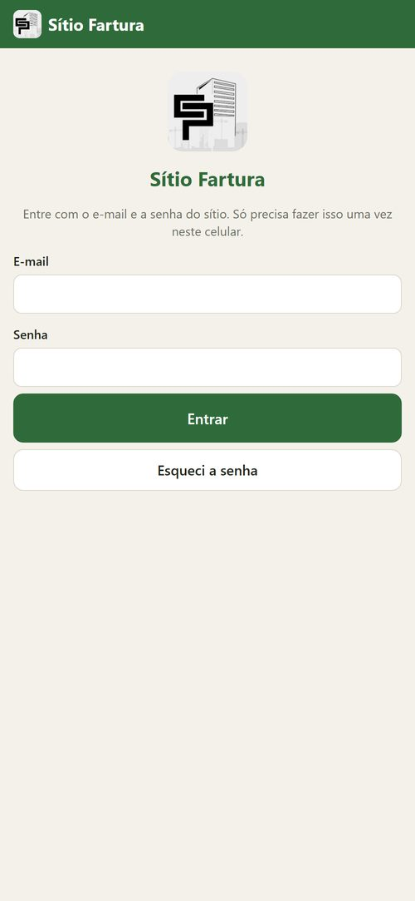
- Na primeira vez, o app pede o e-mail e a senha do sítio.
- Digite e toque em Entrar. Precisa de internet só nessa hora.
- Depois disso o app abre direto, mesmo sem sinal.
- Esqueceu a senha? Toque em Esqueci a senha: chega um e-mail para criar outra.
2Tela inicial
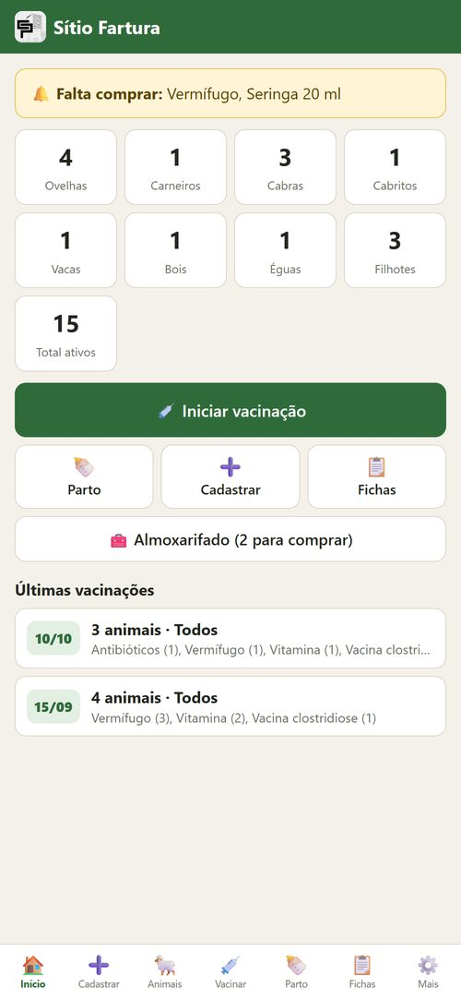
- Mostra quantos animais há de cada tipo. Toque num número para ver a lista.
- Iniciar vacinação, Parto, Cadastrar, Fichas e Almoxarifado ficam aqui.
- Se faltar algum remédio, aparece o aviso amarelo “Falta comprar” no topo.
- Embaixo, os menus de sempre: Início, Cadastrar, Animais, Vacinar, Parto, Fichas e Mais.
3Cadastrar um animal
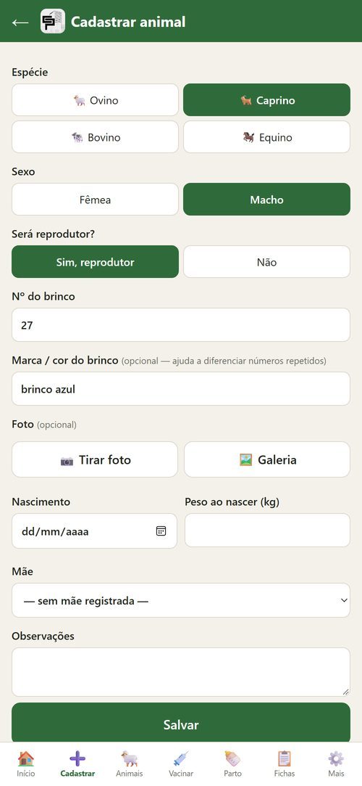
- Toque em Cadastrar.
- Escolha a espécie (ovino, caprino, bovino ou equino) e o sexo.
- Se for macho, diga se é reprodutor.
- Digite o número do brinco. Se dois animais da mesma espécie têm o mesmo número, use Marca / cor do brinco.
- Se quiser, tire uma foto (Tirar foto) ou escolha da Galeria.
- Toque em Salvar.
4Lista de animais
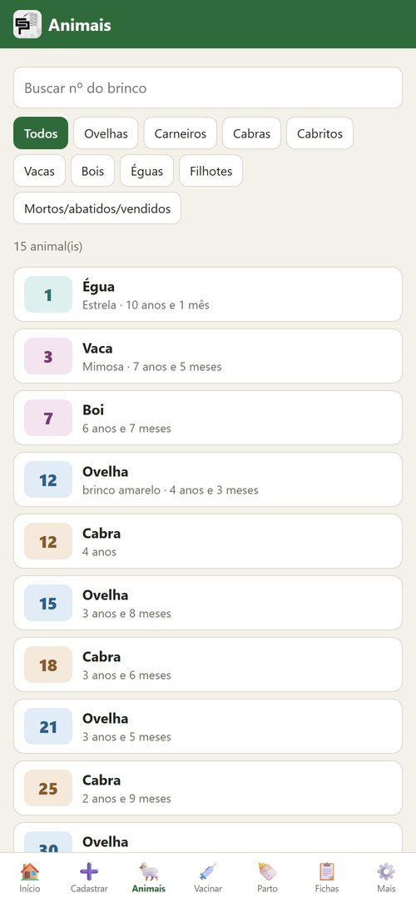
- Em Animais aparecem todos os animais.
- Digite o número do brinco para achar rápido.
- Toque nos botões para ver só ovelhas, cabras, vacas, filhotes…
- Cada espécie tem uma cor no número do brinco. A ovelha 12 e a cabra 12 são animais diferentes.
- Filhote ainda sem brinco aparece como “s/ brinco”, com o brinco da mãe.
5Vacinar
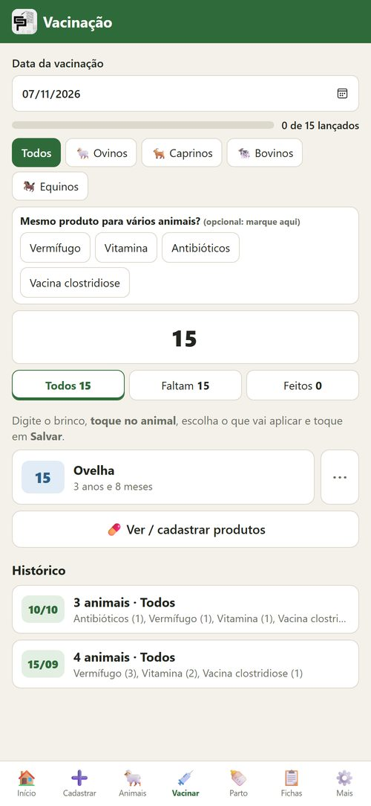
- Toque em Vacinar.
- Digite o número do brinco.
- Toque no animal que apareceu na lista. Se aparecerem dois com o mesmo número, veja se é ovelha ou cabra.
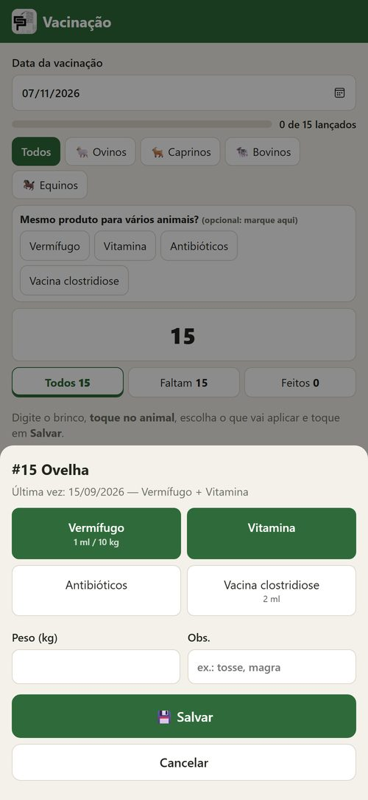
- Toque no que vai aplicar (ex.: Vermífugo e Vitamina). Pode marcar mais de um.
- Se quiser, anote o peso ou uma observação.
- Toque em 💾 Salvar.
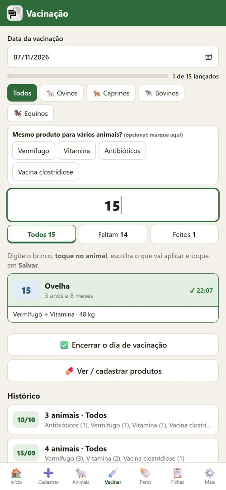
- O animal fica verde: a vacina está lançada. Faça o mesmo com o próximo.
- Tocou no animal errado? Use Desfazer, que aparece embaixo por alguns segundos.
- Tocar num animal que já está verde abre para corrigir ou remover.
- As abas Faltam e Feitos mostram quem já recebeu.
- No fim do dia, toque em Encerrar o dia de vacinação.
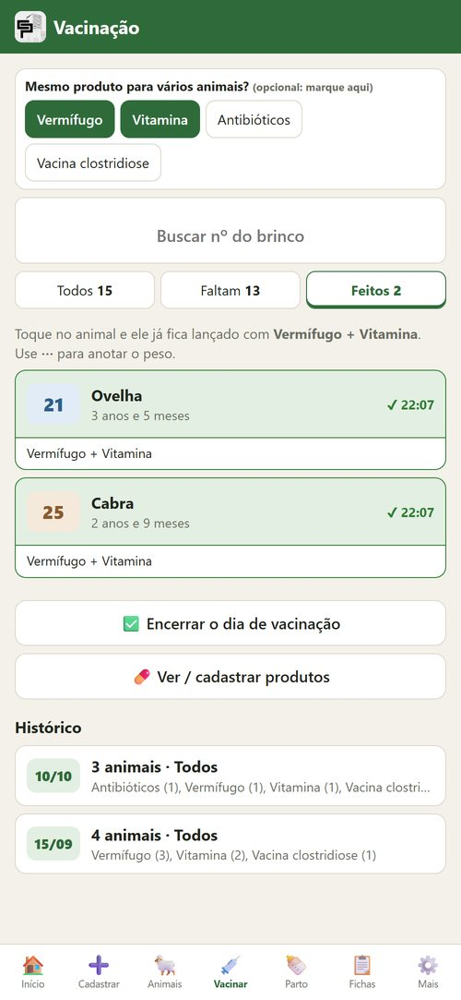
- Dica para ir mais rápido: se muitos animais vão receber a mesma coisa, marque o produto em “Mesmo produto para vários animais?”, lá em cima.
- Aí é só tocar em cada animal: ele já fica lançado, sem abrir a janela.
- Para anotar o peso nesse modo, use os ⋯ ao lado do animal.
6Registrar parto
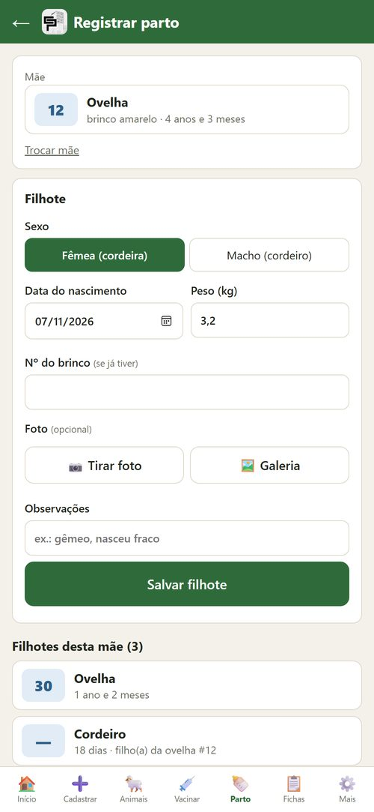
- Toque em Parto e digite o brinco da mãe. Toque nela.
- Escolha se o filhote é fêmea ou macho, a data e o peso.
- O brinco do filhote é opcional. Dá para colocar depois.
- Toque em Salvar filhote. Gêmeos: salve o segundo em seguida.
7Ver um animal
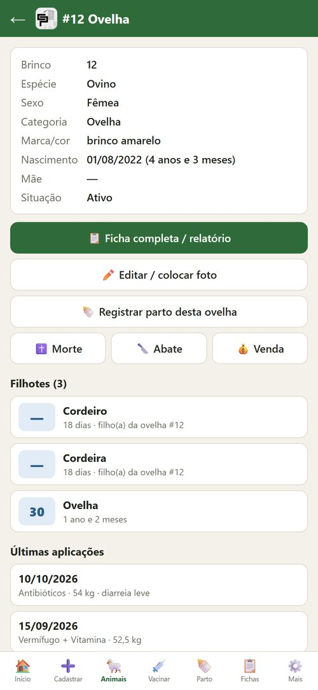
- Toque em qualquer animal para ver os dados, os filhotes e as últimas vacinas.
- Editar / colocar foto muda o cadastro ou coloca o brinco num filhote.
- Morte, Abate e Venda ficam aqui, para quando o animal sair do rebanho.
8Venda, abate e morte
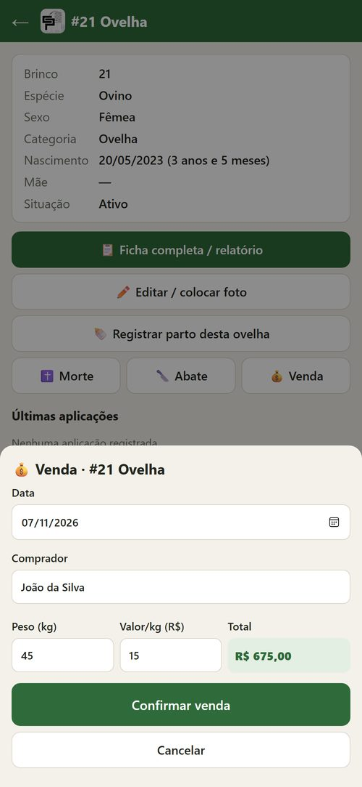
- Venda: comprador, peso e valor por quilo. O total sai sozinho.
- Abate: data e peso do animal.
- Morte: data, causa e até 2 fotos.
- O animal sai das contagens, mas o histórico dele continua guardado.
- Marcou errado? Na página do animal tem Desfazer.
9Ficha do animal (relatório)
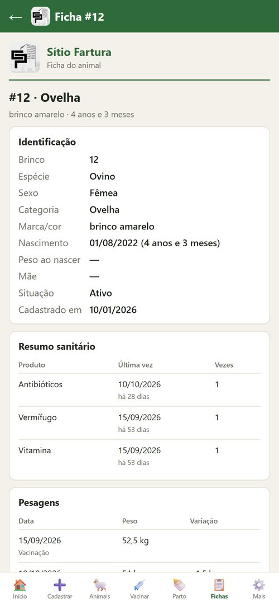
- Em Fichas, toque no animal para ver a vida inteira dele.
- Mostra a última vez que recebeu cada remédio, as pesagens (com o ganho de peso) e os partos.
- No fim da ficha: Imprimir / salvar PDF e Enviar como texto pelo WhatsApp.
10Almoxarifado (o que precisa comprar)
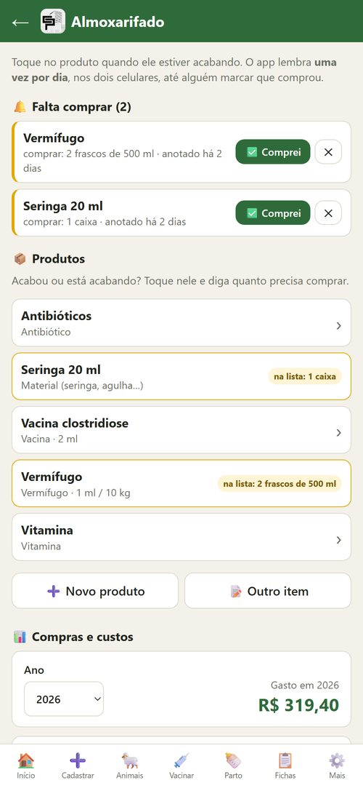
- Abra o Almoxarifado (na tela inicial ou em Mais).
- Remédio acabando? Toque nele, diga quanto precisa comprar e toque em Pôr na lista de compras.
- Coisas que não são remédio (seringa, agulha) entram com Novo produto, tipo Material.
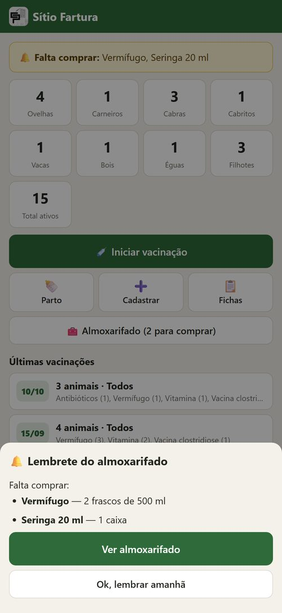
- Enquanto ninguém comprar, o app lembra uma vez por dia ao abrir, nos dois celulares.
- Comprou? Toque em Comprei e coloque o valor pago. O lembrete para.
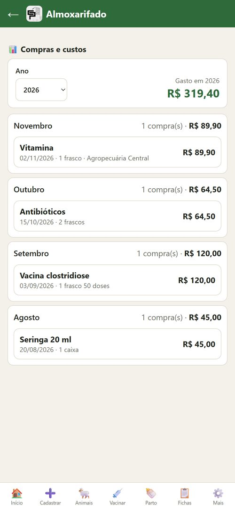
- Em Compras e custos aparece o gasto do ano e de cada mês.
- Toque numa compra para corrigir o valor.
- Em Mais → Planilhas dá para baixar tudo para o Excel.
11Tudo salvo na nuvem
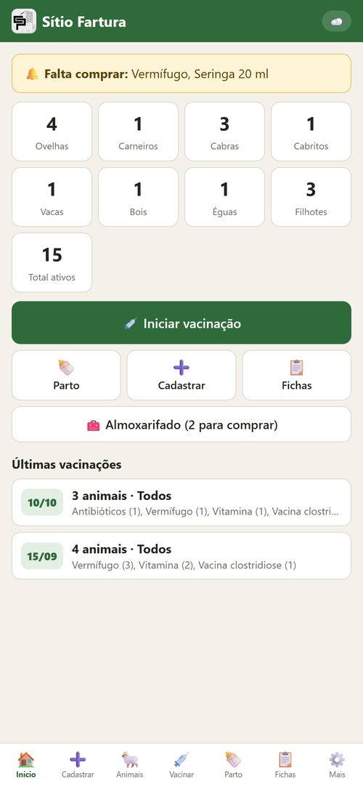
- Tudo o que vocês lançam vai sozinho para a internet e aparece no celular do outro.
- O ícone no canto de cima mostra a situação: ☁️ tudo salvo · ⏳ enviando · 📴 sem internet (envia depois) · ⚠️ problema (toque nele).
- Sem sinal no curral, o app funciona normal.
- Celular quebrou ou trocou? Entre com o mesmo e-mail e senha e tudo volta.
12Colocar o app na tela do celular
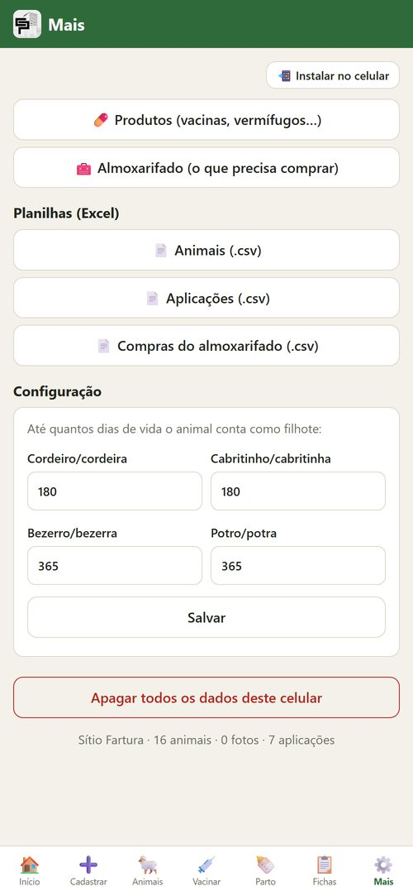
- Em Mais, toque em 📲 Instalar no celular.
- Android (Chrome): confirme em Instalar.
- iPhone (Safari): botão Compartilhar ⬆️ → Adicionar à Tela de Início. No iPhone, depois de instalar, entre com o e-mail e a senha mais uma vez.
?Dúvidas comuns
- Dois animais com o mesmo brinco? Pode. Ovelha 12 e cabra 12 são diferentes. Na mesma espécie, use a marca/cor do brinco ou a foto.
- Filhote sem brinco? Ele aparece pelo brinco da mãe: digite o brinco da mãe na busca.
- Lancei errado? Toque de novo no animal (fica verde) para corrigir ou remover.
- As fotos ficam na galeria? Não: ficam no app e na nuvem. Se quiser na galeria também, tire com a câmera do celular e use o botão Galeria no app.
Os animais que aparecem nas fotos deste guia são de exemplo.